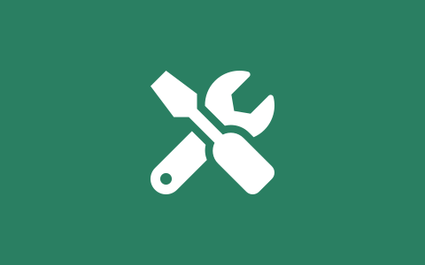
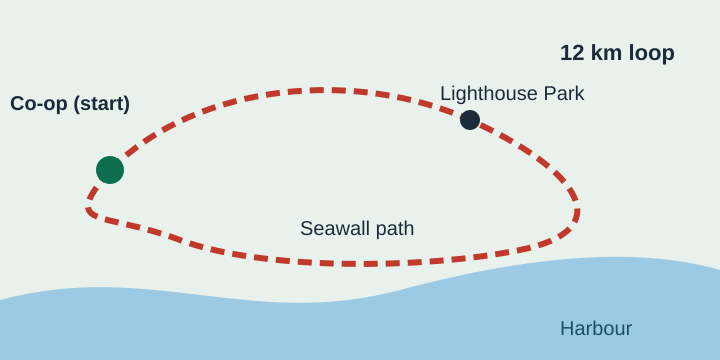

Northshore Bike Co-op
We are a volunteer-run community bike shop. Bring your bike, borrow our tools, and learn to fix it yourself with help from our mechanics. To read our story and values, click here.
Workshops
New

Fix a flat
Learn to remove a wheel, find the hole and patch a tube in under 30 minutes.
Read moreWinter riding
Choose lights, fenders and tires that keep you riding through the rainy season.
Read moreGroup rides
Every Sunday at 10:00 we ride an easy loop along the waterfront. All ages and speeds are welcome.

Opening hours
| Day | Opens | Closes |
| Monday to Friday | 12:00 | 20:00 |
| Saturday | 10:00 | 18:00 |
| Sunday | 10:00 | 16:00 |